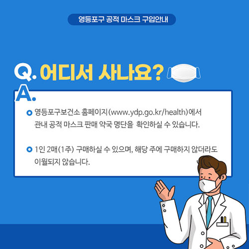
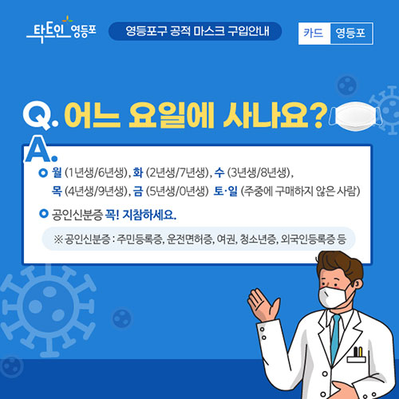
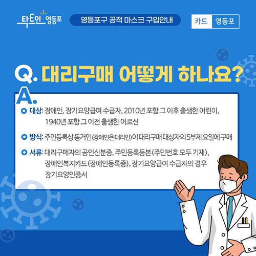

본문 바로가기
주메뉴 바로가기
구의회
보건소
문화관광
평생학습
정보화교육
로그인
회원가입
사이트맵
종합민원
무인민원발급창구
화요아침저녁민원처리
여권발급안내
민원상담
월별지방세안내
지방소득세 개편안내
서울시마을세무사 무료상담
에코마일리지
정화조청소
대형폐기물신청
생활쓰레기배출요령
음식물쓰레기배출요령
지적민원안내
토지특성자료조회
부동상중개보수료
임대차계약정보안내
행정참여
사전정보공표
정책실명제
구민관심사항
주요회의
대학생 아르바이트접수
영어캠프 접수
규제개혁안내
규제정보
교육생활
정보화교육
관내유치원
관내초등학교
관내중학교
관내고등학교
취업정보안내
청년인턴제
오늘의 상품
전통시장 안내
버스정보
지하철정보
재난안전
보건복지
영등포소개
문화관광
검색내용입력
민원센터
행정정보
구민참여
영등포소식
우리구소개
분야별정보
새소식
우리구소식
포토갤러리
영등포소식지
영등포소식지
어린이소식지
그림이야기
카드뉴스
카드뉴스
공적마스크 구입안내



 공적마스크 구입안내
공적마스크 구입안내